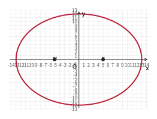
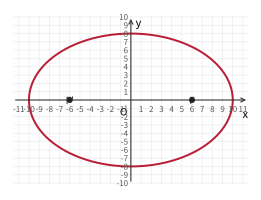
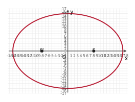

別冊練習問題 10 の解答 焦点と長軸から楕円の方程式・離心率
(1) 焦点が \((\pm5,\ 0)\)、長軸の長さが \(26\) の楕円の方程式と離心率を求めよ。
離心率
\[e=\dfrac ca=\dfrac{5}{13}=\dfrac{5}{13}\]
短軸
\[b^2=a^2-c^2=169-25=144\]

方程式
\[\dfrac{x^2}{169}+\dfrac{y^2}{144}=1\]
【答案】
\[\dfrac{x^2}{169}+\dfrac{y^2}{144}=1,\ \ e=\dfrac{5}{13}\]答
(2) 焦点が \((\pm6,\ 0)\)、長軸の長さが \(20\) の楕円の方程式と離心率を求めよ。
離心率
\[e=\dfrac ca=\dfrac{6}{10}=\dfrac{3}{5}\]
短軸
\[b^2=a^2-c^2=100-36=64\]

方程式
\[\dfrac{x^2}{100}+\dfrac{y^2}{64}=1\]
【答案】
\[\dfrac{x^2}{100}+\dfrac{y^2}{64}=1,\ \ e=\dfrac{3}{5}\]答
(3) 焦点が \((\pm8,\ 0)\)、長軸の長さが \(34\) の楕円の方程式と離心率を求めよ。
離心率
\[e=\dfrac ca=\dfrac{8}{17}=\dfrac{8}{17}\]
短軸
\[b^2=a^2-c^2=289-64=225\]

方程式
\[\dfrac{x^2}{289}+\dfrac{y^2}{225}=1\]
【答案】
\[\dfrac{x^2}{289}+\dfrac{y^2}{225}=1,\ \ e=\dfrac{8}{17}\]答